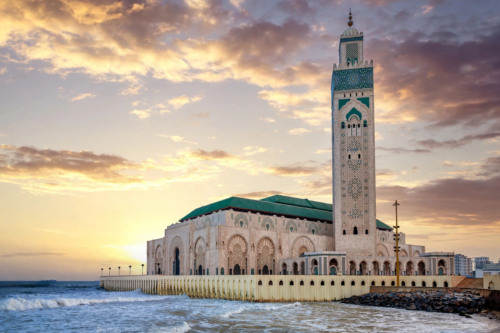

Wikipedia — the free encyclopedia

| Location | Casablanca, Morocco |
| Completed | 1993 |
| Minaret | 210 m — among the tallest in the world |
| Capacity | About 105,000 worshippers (indoor + esplanade) |
The Hassan II Mosque in Casablanca, Morocco, is one of the largest mosques in the world. Designed by French architect Michel Pinseau under King Hassan II and completed in 1993, it stands on a promontory over the Atlantic Ocean — partly built on reclaimed land over the water, fulfilling a Quranic image of the throne of God upon the water.
Its minaret, at 210 metres, is the tallest in Morocco and among the tallest anywhere, topped by a laser whose beam shines toward Mecca. The prayer hall holds about 25,000 worshippers with room for 80,000 more outside. Moroccan craftsmanship — zellige tilework, carved cedar and stucco — was executed by thousands of artisans; a retractable roof opens the hall to the sky.